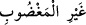
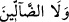

Sûrenin sonunda mü’minlerin îmân, İslâm ve hidâyet isteklerine işâret vardır. Bunlar
da ihsan çeşitleridir. İhsân üç derecedir. 1. Bunlardan birincisi övülmüş rûhânî ahlâktır.
2. Bilinen murâkabelerdir. O da Efendimizin hadîsinde: “Allah’ı görüyormuşcasına
kulluk etmendir.”[171] şeklinde ifâdesini bulmuştur. 3. İstiğrak sırasında celâl
ufuklarında görülen kemâlâttır. Bu kemâl hâline erişen kişi hadiste geçen ( __WORD__ ) teşbih
“kâfını” da kaldırıp Allah’ı görür gibi değil, bizzat şühûd hâlinde kulluk eder. Böylece
kişi, “gayri’l-mağdûbi” (__WORD__) den anlaşılabilecek “cebr” düşüncesi ve “vele’d-
dâllîn” ( __WORD__ ) den çıkabilecek kaderîlik endişesini ortadan kaldırmış olur. İşte
mükâşefe ilmi dedikleri budur. En doğrusunu Allah bilir.
[144]. Münâvî, IV, 420.
[145]. Ebû Dâvud, Edeb, 91; Tirmizi, Edeb, 2.
[146]. Müslim, Salât, 222; Ebû Dâvud, Vitr, 5; Tirmizi, Deavât, 112; Nesâî, Tatbîk.
47, 71; İbn Mâce, İkame, 117; Muvatta’, Kur’ân, 31.
[147]. İbn Mübârek, Kitâbü’z-zühd, s. 78.
[148]. Ebû Dâvud, Sünnet, 1; Tirmizî, Îmân, 18; İbn Mâce Fiten, 17; Müsned, II, 332,
III, 120, 145.
[149]. Aclûnî, II, 289
[150]. Kenzü’l-ummâl, I, 535. Dârimî, Fezâilü’l-Kur’ân, 1.
[151]. Münâvî, III, 56.
[152]. Sehâvî, s. 54; Aclûnî, II. 454.
[153]. Münzirî, Tergîb, III, 456.
[154]. Irâkî, Muğnî, IV, 376
[155]. Müslim, salât, 38; Ebû Dâvud, salât, 132; Tirmizî, tefsîr (2), 1; Nesâî, iftitâh,
23; İbn Mâce, edeb, 52; Müsned, II, 241, 285, 460.
[156]. Buhârî, tevhîd, 50; Müslim, zikir, 1-3, 20-22; Tirmizi, deavât, 131; İbn Mâce,
edeb, 58; Müsned, II, 251, 316; III, 40, 127, 130.
[157]. Kulun fiillerinde hür olmadığını ve irâdesi bulunmadığını öne sürerek hesap ve
sorumluluğu iptal eden itikadî mezhepdir.
[158]. Kulun kendi fiilinin yaratıcısı olduğunu söyleyerek kula yaratıcılık isnâd eden
itikadî mezheptir.
[159]. Tirmizî, tefsir, (56), 6; Beyhakî, Delâil, I, 358.
[160]. Buhârî, savm, 55, 59; Müslim, sıyâm, 181, 182, 186, 193.
[161]. Ebû Dâvud, tatavvu; 25, Tirmizî, mevâkît, 212; Müsned, I, 109.
[162]. Tirmizî, Îmân, 18; Müsned, II, 176, 197
[163]. Aclûnî, II, 216
[164]. Vuslat ve ihsan makamıdır.